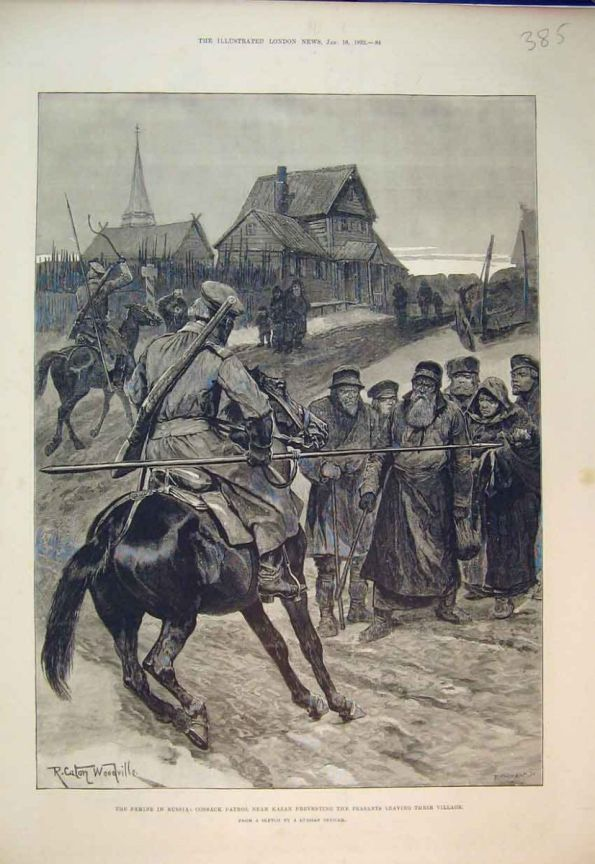
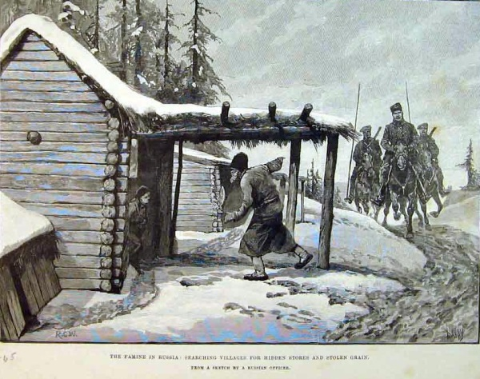
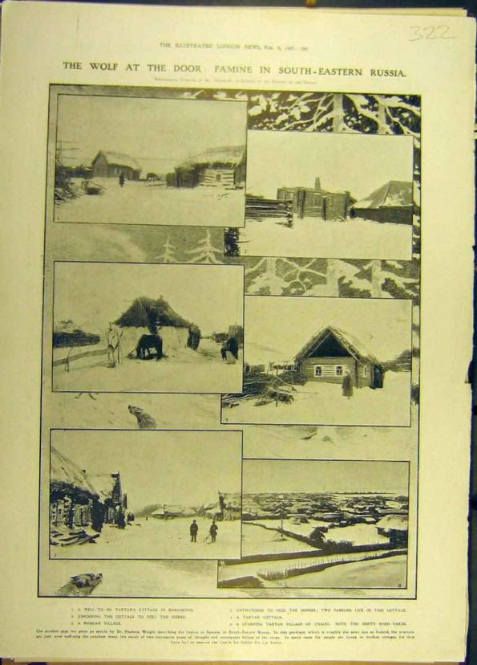
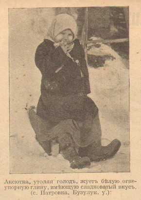

Павел Краснов
Как жилось крестьянам в царской России
Разве что в воображении живущих в альтернативной реальности граждан или в описаниях платных пропагандистов ситуация в «Россия которую мы потеряли» представляется чуть ли не раем земным. Описывается это примерно таким образом: «До Революции и коллективизации кто хорошо работал, тот хорошо жил. Потому что он жил своим трудом, а бедными были лентяи и пьяницы. Кулаки были самыми работящими крестьянами и самыми лучшими хозяевами, поэтому и жили лучше всех.» Далее следует плач про «Россию-кормящую-всю-Европу-пшеницей» или, в крайнем случае, пол-Европы, «в то время как СССР хлеб ввозил», пытаясь доказать таким шулерским образом, что путь социализма СССР был менее эффективен, чем путь царизма. Потом, естественно, про «хруст французской булки», предприимчивых и сметливых русских купцов, богобоязненный, добросердечный и высокоморальный народ-богоносец, который испортили гады-большевики, «лучших людей, погубленных и изгнанных большевиками». Ну правда же, каким надо быть злобным уродом, чтобы погубить такую возвышенную пастораль?
Подобные сусальные сказки, правда, нарисованные недобрыми и непорядочными людьми, появилась тогда, когда подавляющиее тех, кто помнил, как оно было на самом деле, умерли или вышли из возраста, в котором от них можно получать адекватную информацию. К слову, любителям поностальгировать о прекрасных дореволюционных временах в конце 30-х годов простые граждане легко могли без всяких парткомов чисто по-деревенски «начистить рожу», настолько воспоминания о «потерянной России» были свежи и болезненны.
О ситуации в русской деревне до Революции до нас дошло огромное количество источников - как документальных сообщений и статистических данных, так и личных впечатлений. Современники оценивали окружающую их реальность «богоносной России» не просто без восторгов, но и попросту находили её отчаянной, если не сказать страшной. Жизнь среднего русского крестьянина была исключительно суровой, даже более того – жестокой и беспросветной.
Вот свидетельство человека, котого трудно упрекнуть в неадеватности, нерусскости или нечестности. Это звезда мировой литературы – Лев Толстой. Вот как он описывал свою поездку по нескольким десяткам деревень разных уездов в самом конце 19 века [1]:
«Во всех этих деревнях хотя и нет подмеси к хлебу, как это было в 1891-м году, но хлеба, хотя и чистого, дают не вволю. Приварка - пшена, капусты, картофеля, даже у большинства, нет никакого. Пища состоит из травяных щей, забеленных, если есть корова, и незабеленных, если ее нет, - и только хлеба. Во всех этих деревнях у большинства продано и заложено всё, что можно продать и заложить.
Из Гущина я поехал в деревню Гневышево, из которой дня два тому назад приходили крестьяне, прося о помощи. Деревня эта состоит, так же как и Губаревка, из 10 дворов. На десять дворов здесь четыре лошади и четыре коровы; овец почти нет; все дома так стары и плохи, что едва стоят. Все бедны, и все умоляют помочь им. "Хоть бы мало-мальски ребята отдыхали", -- говорят бабы. "А то просят папки (хлеба), а дать нечего, так и заснет не ужинаючи"...
Я попросил разменять мне три рубля. Во всей деревне не нашлось и рубля денег... Точно так же у богатых, составляющих везде около 20%, много овса и других ресурсов, но кроме того в этой деревне живут безземельные солдатские дети. Целая слободка этих жителей не имеет земли и всегда бедствует, теперь же находится при дорогом хлебе и при скупой подаче милостыни в страшной, ужасающей нищете...
Из избушки, около которой мы остановились, вышла оборванная грязная женщина и подошла к кучке чего-то, лежащего на выгоне и покрытого разорванным и просетившимся везде кафтаном. Это один из ее 5-х детей. Трехлетняя девочка больна в сильнейшем жару чем-то в роде инфлуэнцы. Не то что об лечении нет речи, но нет другой пищи, кроме корок хлеба, которые мать принесла вчера, бросив детей и сбегав с сумкой за побором... Муж этой женщины ушел с весны и не воротился. Таковы приблизительно многие из этих семей...
Нам, взрослым, если мы не сумасшедшие, можно, казалось бы, понять, откуда голод народа. Прежде всего он - и это знает всякий мужик - он
1) от малоземелья, оттого, что половина земли у помещиков и купцов, которые торгуют и землями и хлебом.
2) от фабрик и заводов с теми законами, при которых ограждается капиталист, но не ограждается рабочий.
3) от водки, которая составляет главный доход государства и к которой приучили народ веками.
4) от солдатчины, отбирающей от него лучших людей в лучшую пору и развращающей их.
5) от чиновников, угнетающих народ.
6) от податей.
7) от невежества, в котором его сознательно поддерживают правительственные и церковные школы.
Чем дальше в глубь Богородицкого уезда и ближе к Ефремовскому, тем положение хуже и хуже... На лучших землях не родилось почти ничего, только воротились семена. Хлеб почти у всех с лебедой. Лебеда здесь невызревшая, зеленая. Того белого ядрышка, которое обыкновенно бывает в ней, нет совсем, и потому она не съедобна. Хлеб с лебедой нельзя есть один. Если наесться натощак одного хлеба, то вырвет. От кваса же, сделанного на муке с лебедой, люди шалеют»
Ну что, любители «России-которую потеряли», впечатляет?
В. Г. Короленко, много лет проживший в деревне, бывавший в начале 1890-х годах в других голодавших районах и организовываший там столовые для голодающих и раздачу продовольственных ссуд оставил очень характерые свидетельства государственных служащих: «Вы свежий человек, натыкаетесь на деревню с десятками тифозных больных, видите как больная мать склоняется над колыбелью больного ребенка, чтобы покормить его, теряет сознание и лежит над ним, а помочь некому, потому что муж на полу бормочет в бессвязном бреду. И вы приходите в ужас. А «старый служака» привык. Он уже пережил это, он уже ужаснулся двадцать лет назад, переболел, перекипел, успокоился... Тиф? Да ведь это у нас всегда! Лебеда? Да у нас этой каждый год!..» [2].
Обратите внимание, что у всех авторов речь идёт не о единичтом случайном событии, а о постоянном и жестоком голоде в русской деревне.
«Я имел в виду не только привлекать пожертвования в пользу голодающих, но еще поставить перед обществом, а может быть и перед правительством, потрясающую картину земельной неурядицы и нищеты земледельческого населения на лучших землях.
У меня была надежда, что, когда мне удастся огласить все это, когда я громко на всю Россию расскажу об этих дубровцах, пралевцах и петровцах, о том, как они стали "нежителями", как "дурная боль" уничтожает целые деревни, как в самом Лукоянове маленькая девочка просит у матери "зарыть ее живую в земельку", то, быть может, мои статьи смогут оказать хоть некоторое влияние на судьбу этих Дубровок, поставив ребром вопрос о необходимости земельной реформы, хотя бы вначале самой скромной.» [2]
Интересно, что скажут на это любители поописывать «ужасы голодомора» - единственного голода СССР (за исключением войны, естественно)?
В попытке спастись от голода жители целых сёл и районов «шли с сумой по миру», пытаясь спастись от голодной смерти. Вот как описывает это Короленко, который был свидетелем этого. Он же рассказывает, что подобное было в жизни большинства русских крестьян.
Сохранились жестокие зарисовки с натуры западных корреспондентов русского голода конца 19 века.

Орды голодающих пытаются спастись в городах
«Знаю много случаев, когда по нескольку семей соединялись вместе, выбирали какую-нибудь старуху, сообща снабжали ее последними крохами, отдавали ей детей, а сами брели вдаль, куда глядели глаза, с тоской неизвестности об оставленных ребятах...По мере того, как последние запасы исчезают у населения,-- семья за семьей выходит на эту скорбную дорогу... Десятки семей, соединявшиеся стихийно в толпы, которых испуг и отчаяние гнали к большим дорогам, в села и города. Некоторые местные наблюдатели из сельской интеллигенции пытались завести своего рода статистику для учета этого, обратившего всеобщее внимание, явления. Разрезав каравай хлеба на множество мелких частей,-- наблюдатель сосчитывал эти куски и, подавая их, определял таким образом количество нищих, перебывавших за день. Оказывались цифры, поистине устрашающие... Осень не принесла улучшения, и зима надвигалась среди нового неурожая... Осенью, до начала ссудных выдач, опять целые тучи таких же голодных и таких же испуганных людей выходили из обездоленных деревень...Когда ссуда подходила к концу, нищенство усиливалось среди этих колебаний и становилось все более обычным. Семья, подававшая еще вчера, -- сегодня сама выходила с сумой...» (там же)

Толпы голодающих из деревни добрались до Петербурга. Около ночлежки.
Миллионы отчаявшихся людей выходили на дороги, бежали в города, доходя даже до столиц. Обезумевшие от голода люди попрошайничали и воровали. Вдоль дорог лежали трупы погибших от голода. Чтобы предотвратить это гигантское бегство отчаявшихся людей в голодающие деревни вводили войска и казаков, которые не давали крестьянам покинуть деревню. Часто не выпускали вообще, обычно, разрешали покидать деревню только тем, у кого был паспорт. Паспорт выдавался на определённый срок местными властями, без него крестьянин считался бродягой и паспорт был далеко не у всех. Человек без паспорта считался бродягой, подвергался телесным наказаниям, тюремному заключению и высылке.

Казаки не дают крестьянам покинуть деревню чтобы пойти с сумой.
Интересно, что любители порассуждать о том, как большевики не выпускали людей из деревень во время «голодомора», скажут про это?
Об этой страшной, но обыденной картине «Росси-которую-мы-потеряли» сейчас старательно забывают.
Поток голодающих был таким, что полиция и казаки не могли его удержать. Для спасения ситуации в 90-х годах 19 века стали применяться продовольственные ссуды – но крестьянин обязан был отдать их с урожая осенью. Если он не отдавал ссуду, то её по принципу круговой поруки «вешали» на деревенскую общину, а дальше как получится – могли разорить подчистую, забрав все как недоимки, могли собрать «всем миром» и отдать долг, могли молить местные власти простить ссуду.
Сейчас мало кто знает, что для того, чтобы получить хлеб, царское правительство принимало жёсткие конфискационные меры – экстренно увеличивало налоги в определенных районах, взыскивало недоимки, а то и просто изымало излишки силовым путём – полицейскими урядниками с отрядами казаков, ОМОНом тех лет. Основная тягота этих конфискационных мер ложилась на бедные слои населения. Сельские богачи обычно откупались взятками.

Урядник с казаками въезжают в деревню в поисках спрятанного зерна.
Крестьяне массово укрывали хлеб. Их пороли, мучали, выбивали хлеб любыми путями. С одной стороны это было жестоко и несправедливо, с другой, помогало спасти от голодной смерти их соседей. Жестокость и несправедливость были в том, что хлеб в государстве был, пусть и в небольшом количестве, но он шёл на экспорт, а с экспорта жировал узкий круг «эффективных собственников».

Голод в России. В голодающую деревню введены войска. Крестьянка-татарка на коленях умоляет урядника.
«Вместе с весной подходило, собственно, самое трудное время. Свой хлеб, который "обманщики" умели порой скрыть от бдительного ока урядников, от усердных фельдшеров, от "обысков и выемок",-- почти всюду уже окончательно исчез.» [2]
Хлебные ссуды и бесплатные столовые действительно спасли много людей и облегчили страдания, без этого ситуация стала бы просто чудовищной. Но их охват был ограниченным и соврешенно недостаточным. В тех случаях, когда хлебная помощь доходила до голодавших, нередок оказывалось уже поздно. Люди уже умирали или получали непоправимые расстройства здоровья, для лечения которых нужна была квалифицированная врачебная помощь. Но в царской России катастрофически не хватало не то что врачей, даже фельдшеров, не говоря уже лекарствах и средствах борьбы с голодоанием. Ситуация была ужасающей.

Раздача кукурузы голодающим, д. Молвино, неподалёку от Казани
«... на печке сидит мальчик, опухший от голода, с желтым лицом и сознательными, грустными глазами. В избе -- чистый хлеб от увеличенной ссуды (улика в глазах недавно еще господствовавшей системы), но теперь, для поправления истощенного организма, уже недостаточно одного, хотя бы и чистого хлеба.»[2]
Быть может Лев Николаевич Толстой и Владимир Галактионович Короленко были писателями, то есть людьми чувствительными и эмоциональными, это было исключением и преувеличивают масштабность явления и в реальности все не так плохо?
Увы, иностранцы, бывшие в России тех лет описывают абсолютно то же самое, если не хуже. Постоянный голод, периодически перемежаемый жестокими голодными морами был страшной обыденностью царской России.

Изба голодающиего крестьянина
Профессор медицины и доктор Эмиль Диллон жил в России с 1877 по 1914 год, работал профессором в нескольких российских университетах, много путешествовал по всем регионам России хорошо видел ситуацию на всех уровнях на всех уровнях - от министров до бедных крестьян. Это честный ученый, совершенно незаинтересованный в искажении реальности.
Вот как он описывает жизнь среднего крестьянина царских времён: «Российский крестьянин ... ложится спать в шесть или пять часов вечера зимой, потому что не может тратить деньги на покупку керосина для лампы. У него нет мяса, яиц, масла, молока, часто нет капусты, он живет главным образом на черном хлебе и картофеле. Живет? Он умирает от голода из-за их недостаточного количества.» [3]
Ученый-химик и агроном А.Н.Энгельгардт, жил работал в деревне и оставил классическое фундаментальное исследование реальности русского села - «Письма из деревни»:
«Тому, кто знает деревню, кто знает положение и быт крестьян, тому не нужны статистические данные и вычисления, чтобы знать, что мы продаем хлеб за границу не от избытка... В человеке из интеллигентного класса такое сомнение понятно, потому что просто не верится, как это так люди живут, не евши. А между тем это действительно так. Не то, чтобы совсем не евши были, а недоедают, живут впроголодь, питаются всякой дрянью. Пшеницу, хорошую чистую рожь мы отправляем за границу, к немцам, которые не будут есть всякую дрянь... У нашего мужика-земледельца не хватает пшеничного хлеба на соску ребенку, пожует баба ржаную корку, что сама ест, положит в тряпку – соси».[4]
Как-то очень сильно расходится с пасторальным раем не так ли?
Быть может в начале века 20 века всё наладилось, как твердят сейчас некоторые «патриоты царской России». Увы, это совершенно не так.
Согласно наблюдениям Короленко, человека, занимавшегося помощь голодающим, в 1907 году ситуация в деревне не только не изменилась, напротив, стала заметно хуже:
«Теперь (1906--7 год) в голодающих местностях отцы продают дочерей торговцам живого товара. Прогресс русского голода очевидный». [2]

Голод в России. Крыши разобраны чтобы соломой кормить скотину
«Волна переселенческого движения быстро растет с приближением весны. Челябинским переселенческим управлением зарегистрировано за февраль 20 000 ходоков, большинство из голодающих губерний. Среди переселенцев распространены сыпной тиф, оспа, дифтерит. Медицинская помощь недостаточна. Столовых от Пензы до Манчжурии только шесть». Газета «Русское слово» от 30 (17) марта 1907 года [5]
- Имеются в виду именно голодные переселенцы, то есть беженцы от голода, которые описывались выше. Совершенно очевидно, что голод в России фактически не прекращался и, к слову, Ленин, когда он писал о том, что при Советской Власти крестьянин впервые поел хлеба досыта – нисколько не преувеличивал.
В 1913 был наибольший урожай в истории дореволюционной России, но голод был всё равно. Особенно жестоким он был в Якутии и прилегающих территориях, где он так и не прекращался с 1911г. Местные и центральные власти практически никак не заинтересовались проблемами помощи голодающим. Ряд селений вымер полностью. [6]
А есть ли научные статистические данные тех лет? Да, есть, они суммировались и о голоде открыто писали даже в энциклопедиях.
«После голода 1891 г., охватывающего громадный район в 29 губерний, нижнее Поволжье постоянно страдает от голода: в течение XX в. Самарская губерния голодала 8 раз, Саратовская 9. За последние тридцать лет наиболее крупные голодовки относятся к 1880 г. (Нижнее Поволжье, часть приозерных и новороссийских губерний) и к 1885 г. (Новороссия и часть нечернозёмных губерний от Калуги до Пскова); затем вслед за голодом 1891 г. наступил голод 1892 г. в центральных и юго-восточных губерниях, голодовки 1897 и 98 гг. приблизительно в том же районе; в XX в. голод 1901 г. в 17 губерниях центра, юга и востока, голодовка 1905 г. (22 губернии, в том числе четыре нечернозёмных, Псковская, Новгородская, Витебская, Костромская), открывающая собой целый ряд голодовок: 1906, 1907, 1908 и 1911 гг. (по преимуществу восточные, центральные губернии, Новороссия)»[7]
Обратите внимание на источник – явно не ЦК партии большевиков. Так вот обыденно и флегматично энциклопедический словарь рассказывает о всем известном в России событии - регулярном голоде. Голод раз в 5 лет был обыденным явлением. Причём, прямо говорится о том, что народ в России голодал и в начале XXв., то есть речи нет о том, что проблема постоянного голода был решена царским правительством.
«Хруст французской булки», говорите? Вы хотели бы вернуться в такую Россию, уважаемый читатель?
Кстати, а откуда хлеб на ссуды в голод? Дело в том, что хлеб в государстве был, но его в огромных количествах вывозили за рубеж на продажу. Картина была омерзительной и сюрреалистической. Американские благотворительные общества посылали в голодающие районы России хлеб. Но вывоз хлеба, отобранного у голодавших крестьян, не останавливался.
Людоедское выражение "Недоедим, но вывезем" принадлежит министру финансов правительства Александра Третьего, Вышнеградскому, кстати, крупному математику. Когда директор департамента неокладных сборов А. С. Ермолов вручил Вышнеградскому докладную записку, в которой писал о «страшном признаке голода», то интеллигентый математик тогда в ответ и и заявил. Причем повтораял потом не раз.
Естественно, получалось так, что недоедали одни, а вывозили и получали золото от экспорта – совсем другие. Голод при Александре Третьем стал совершенной обыденностью, ситуация стала заметно хуже, чем при его отце – «царе-освободителе.» Зато Россия стала интенсивно вывозить хлеб, которого не хватало своим крестьянам.
Это так и называли, ничуть не стесняясь - «голодный экспорт». В смысле, голодный для крестьян. Причём придумала всё это вовсе не большевистская пропаганда. Это была страшная реальность царской России.
Вывоз продолжался даже когда в результате неурожая чистый душевой сбор составил около 14 пудов при критическом уровне голода для России – 19,2 пуда. В 1891-92 голодало свыше 30 миллионов человек. В открытых Красным Крестом столовых кормилось до 1,5 миллиона человек. По официальным резко заниженным данным тогда погибло 400 тысяч человек, современные источники считают, что умерло более полумиллиона человек, с учетом плохого учета инородцев смертность может быть существенно больше. Зато «недоели, но вывезли.»
Справедливости ради следует сказать, что увидевший результаты чудовищного голода, Вышнеградский своим указом остановил вывоз хлеба и предложил правительству ввести временный прогрессивный налог на богатых с целью борьбы с голодом. Но это возмутительное предложение было отвергнуто, запрет на вывоз соблюдался как придётся, затем и вовсе был отменен через 10 месяцев, несмотря на то что «царь-голод» продолжался, а Вышнеградского вынудили уйти в отставку. [8]
Хлебные монополисты отлично осознавали, что их действия приводят к страшному голоду и гибели сотен тысяч людей. Им было на это плевать.
Помощь правительства была периодической и совершенно недостаточной. Царское правительство раздражали такие мелочи, как постоянный голод, отвлекавшие от балов и шампанского.
«Александра III раздражали упоминания о «голоде», как слове, выдуманном теми, кому жрать нечего. Он высочайше повелел заменить слово «голод» словом «недород». Главное управление по делам печати разослало незамедлительно строгий циркуляр».- писал известный адвокат-кадет и противник большевиков Грузенберг. К слову, за нарушение циркуляра можно было совершенно не в шутку сесть в тюрьму. Прецеденты были. [9]
При его царственном сыне Николае-2 запрет смягчили, но когда ему говорили про голод в Росии, он сильно возмущался и требовал ни в коем случае не слышать «про это когда оне изволиле обедать.» Правда у большинства народа, которого угораздило иметь такого, прости господи, правителя с обедами дела обстояли не столь удачно и слово «голод» они знали не по рассказам:
«Крестьянская семья, где душевой доход был ниже 150 рублей (среднего уровня и ниже) систематически должна была сталкиваться с голодом. Исходя из этого можно заключить, что периодический голод был в значительной степени типичен для большинства крестьянского населения.» [10]
К слову, среднедушевой доход в те годы составлял 102 рубля [11]. Хорошо ли себе представляют современные радетели царской России, что означают в реальности такие сухие академические строчки?
«Систематически сталкиваться»...
"При среднем потреблении, близком к минимальной норме, в силу статистического разброса потребление половины населения оказывается меньше среднего и меньше нормы. И хотя по объёмам производства страна была более-менее обеспечена хлебом, политика форсирования вывоза приводила к тому, что среднее потребление балансировало на уровне голодного минимума и примерно половина населения жила в условиях постоянного недоедания..." [12]
Подпись под фотографиями: Голод в Сибири. Фотогр. снимки с натуры, сделанные в Омске 21 июля 1911 года членом Гос. Думы Дзюбинским.
Первая фотография: Семья вдовы кр. д. Пуховой, Курган. у., В. Ф. Рухловой, идущей «на урожай». В запряжке жеребенок по второму году и два мальчика на пристяжке. Сзади — старший сын, упавший от истощения.
Вторая фотография: Кр. Тобол. губ., Тюкалин. у., Камышинской вол., д. Караульной, М. С. Баженов с семьей, идущий «на урожай». Источник: ЖУРНАЛ «ИСКРЫ», ГОД ОДИННАДЦАТЫЙ, при газете «Русское Слово». № 37, Воскресенье, 25 сентября 1911г. [http://www.odin-fakt.ru/iskry/_37_jurnala_iskry_god1911/]

Причем это все постоянный, «фоновый» голод, всякие царь-голоды, моры, недороды – это дополнительно.
Из-за крайне отсталых агротехнологий рост населения «съедал» рост производительности труда в сельском хозяйстве, страна уверенно попала в петлю «черного тупика», из которого не могла выбраться при исчерпавшей себя системе государственного управления типа «романовский царизм».
Минимальный физиологический минимум для прокормления России: не менее 19,2 пуда на душу населения (15,3 пуда - людям, 3,9 пуда - минимальный корм скоту и птице). Это же число было нормативом для рассчетов Госплана СССР начала 1920-х годов. То есть при Советской Власти планировалось, что у среднего крестьянина должно был оставаться не менее этого количества хлеба. Царскую власть такие вопросы мало волновали.
Несмотря на то, с начала ХХ века среднее потребление в Российской Империи составило, наконец-то, критические 19,2 пуда на человека, но одновременно в ряде районов рост потребления зерновых происходил на фоне падения потребления других продуктов.
Даже это достижение (минимум физического выживания) было неоднозначным – по подсчетам с 1888 по 1913 год среднедушевое потребление в стране сократилось по меньшей мере на 200 ккал.[10]
Эта негативная динамика подтверждаются наблюдениями не просто «незаинтересованных исследователей» - ярых сторонников царизма.
Так один из инициаторов создания монархической организации «Всероссийский национальный союз» Михаил Осипович Меньшиков писал в 1909 году:
«С каждым годом армия русская становится всё более хворой и физически неспособной...Из трёх парней трудно выбрать одного, вполне годного для службы... Плохое питание в деревне, бродячая жизнь на заработках, ранние браки, требующие усиленного труда в почти юношеский возраст, — вот причины физического истощения...Сказать страшно, какие лишения до службы претерпевает иногда новобранец. Около 40 проц. новобранцев почти в первый раз ели мясо по поступлении на военную службу. На службе солдат ест кроме хорошего хлеба отличные мясные щи и кашу, т.е. то, о чём многие не имеют уже понятия в деревне...»[13]. Точно такие же данные дал привел главнокомандующий генерал В.Гурко – по призыву с 1871 по 1901 г., сообщив, что 40% крестьянских парней впервые в жизни пробуют мясо в армии.
То есть даже ярые, фанатичные сторонники царского режима признают то, что питание среднего крестьянина было очень плохим, что приводило к массовым заболеванием и истощению.
«Западное сельскохозяйственное население в основном потребляло высококалорийные продукты животного происхождения, российский крестьянин удовлетворял свою потребность в пище с помощью хлеба и картофеля с меньшей калорийностью. Потребление мяса необыкновенно мало. Кроме малой энергетической ценности подобного питания...потребление большой массы растительной пиши, компенсирующей нехватку животной, влечет за собой тяжелые желудочные заболевания»[10].
Голод приводил к тяжёлым массовым болезням и жестоким эпидемиям. [14] Даже по дореволюционным исследованиям официального органа (отдела Министерства Внутренних Дел Российской Империи) ситуация выглядит просто ужасающей и позорной. [15] В исследовании приведен показатель смертности на 100 тыс. чел. по таким болезным: в европейских странах и отдельных самоуправляемых территориях (например, Венгрия) в составе стран.
По смертности по всем шести основным инфекционным болезням (оспа, корь, скарлатина, дифтерия, коклюш, тиф) прочно, с колоссальным отрывом в разы лидировала Россия.
1. Россия – 527,7 чел.
2. Венгрия – 200,6 чел.
3. Австрия – 152,4 чел.
Наименьшая суммарная смертность по основным болезням - Норвегия – 50,6 чел. Более чем в 10 раз меньше чем в России!
Смертность по болезням:
Скарлатина: 1-е место – Россия – 134,8 чел., 2-е место – Венгрия – 52,4 чел. 3-е место – Румыния – 52,3 чел.
Даже в Румынии и неблагополучной Венгрии смертность в два с лишним раза меньше, чем в России. Для сравнения, наименьшая смертность от скарлатины была в Ирландии – 2,8 чел.
Корь: 1. Россия – 106,2 чел. 2-е Испания – 45 чел. 3-е Венгрия – 43,5 чел. Наименьшая смертность от кори Норвегия – 6 чел, в нищей Румынии – 13 чел. Опять разрыв с ближайшим соседом в списке – более чем в два раза.
Тиф: 1. Россия – 91,0 чел. 2. Италия – 28,4 чел. 3. Венгрия – 28,0 чел. Наименьшая в Европе - Норвегия – 4 чел. Под тиф, кстати, в России-которую-мы-потеряли списывали потери от голода. Так рекомендовалось делать врачам – списывать голодный тиф (поражение кишечника при голодании и сопутствующих заболеваниях) как инфекционный. Об этом вполне открыто писали в газетах. В общем, разрыв с ближайшим соседом по несчастью – почти 4 раза. Кто-то, кажется, говорил,что большевики подделывали статистику? Ну-ну. А вот тут хоть подделывай, хоть нет – уровень нищей африканской страны.
Уже неудивительно, что далее картина практически такая же.
Коклюш: 1.Россия – 80,9 чел. 2. Шотландия – 43,3 чел. 3. Австрия – 38,4 чел.
Оспа: 1. Россия – 50,8 чел. 2. Испания – 17,4 чел. 3.Италия – 1,4 чел. Разница с весьма небогатой и отсталой аграрной Испанией – практически 3 раза. Про лидеров в ликвидации этой болезни даже лучше не вспоминать. Нищая, притесняемая англичанами Ирландия, откуда народ тысячами бежал за океан - 0,03 чел. Про Швецию даже неприлично говорить 0,01 человек на 100 тысяч, то есть один из 10 миллионов. Разница более чем в 5000 раз.
Единственно в чём разрыв не столь ужасен, всего чуть более полутора раз – дифтерия: 1. Россия – 64,0 чел. 2. Венгрия – 39,8 чел. 3-е место по смертности – Австрия – 31,4 чел. Мировой лидер богатства и индустриализации, только недавно избавившаяся от турецого ига Румыния – 5,8 чел.
«Дети питаются хуже, чем телята у хозяина, имеющего хороший скот. Смертность детей куда больше, чем смертность телят, и если бы у хозяина, имеющего хороший скот, смертность телят была так же велика, как смертность детей у мужика, то хозяйничать было бы невозможно.... Если бы матери питались лучше, если бы наша пшеница, которую ест немец, оставалась дома, то и дети росли бы лучше и не было бы такой смертности, не свирепствовали бы все эти тифы, скарлатины, дифтериты. Продавая немцу нашу пшеницу, мы продаём кровь нашу, то есть мужицких детей»[16].
Несложно посчитать, что в Российской Империи только из-за повышенной заболеваемости от голода, отвратительно поставленной медицины и гигиены, просто так, между прочим ни за понюшку табаку умирало в года примерно четверть миллиона человек. Это результат именно бездарного и безответственного государственного управления России. И это только в случае, если бы удалось улучшить ситуацию до уровня самой неблагополучной страны «классической» Европы в этом отношении - Венгрии. Если сократить разрыв до уровня среднеевропейской страны, только это спасло бы примерно полмиллиона жизней в год. За все 33 года правления Сталина в СССР, раздираемым последствиями Гражданской, жестокой классовой борьбой в обществе, несколькими войнами и их последствиями было приговорено к расстрелу по максимуму 800 тысяч человек (приведено в исполнение существенно меньше, но пусть так). Так вот это число запросто перекрывается всего 3-4 годами повышенной смертности в «России-которую-мы-потеряли.»
Даже самые ярые сторонники монархии не говорили, просто кричали о вырождении русского народа.
«Население, существующее впроголодь, а часто и просто голодающее, не может дать крепких детей, особенно если к этому прибавить те неблагоприятные условия, в каких, помимо недостатка питания, находится женщина в период беременности и вслед за нею»[17].
«Перестанемте, господа, обманывать себя и хитрить с действительностью! Неужели такие чисто зоологические обстоятельства, как недостаток питания, одежды, топлива и элементарной культуры у русского простонародья ничего не значат? Но они отражаются крайне выразительно на захудании человеческого типа в Великороссии, Белоруссии и Малороссии. Именно зоологическая единица — русский человек во множестве мест охвачен измельчанием и вырождением, которое заставило на нашей памяти дважды понижать норму при приёме новобранцев на службу. Еще сто с небольшим лет назад самая высокорослая армия в Европе (суворовские “чудо-богатыри”), — теперешняя русская армия уже самая низкорослая, и ужасающий процент рекрутов приходится браковать для службы. Неужели этот “зоологический” факт ничего не значит? Неужели ничего не значит наша постыдная, нигде в свете не встречаемая детская смертность, при которой огромное большинство живой народной массы не доживает до трети человеческого века?»[18]
Даже если подвергать сомнению результаты этих расчетов, очевидно, что динамика изменений питания и производительности труда в сельском хозяйстве царской России (а это составляло подавляющее большинство населения страны) были совершенно недостаточны для быстрого развития страны и проведения современной индустриализации – при массовом уходе рабочих рук на заводы их было бы нечем кормить в условиях царской России.
Может быть это была общая картина для того времени и так было везде? А как обстояли в начале XXвека дела с питанием у геополитических оппонентов Российской Империи? Примерно вот так, данные по Нефедову [12]:
Французы, например, потребляли в 1,6 раз больше зерна, чем русские крестьяне. И это в климате, где растет виноград и пальмы. Если в числовом измерении француз съедал 33,6 пуда зерна в год, производя 30,4 пуда и импортируя ещё 3,2 пуда на человека. Немец потреблял 27,8 пуда, производя 24,2, лишь только в неблагополучной Австро-Венгрии, доживавшей последние годы потребление зерновых составляло 23,8 пуда на душу.
Мяса русский крестьянин потреблял в 2 раза меньше, чем в Дании и в 7-8 раз меньше, чем во Франции. Молока русский крестьян выпивал в 2,5 раза меньше, чем датчанин и в 1,3 раза меньше, чем француз.
Яйиц русский крестьянин съедал в аж 2,7 (!) г в день, в то время датский крестьянин – 30 г, а французский - 70,2 г в день.
Кстати, десятки кур у русских крестьян появились только после Октябрьской Революции и Коллективизации. До этого кормить кур зерном, которого не хватает твоим детям было слишком экстравагантно. Поэтому все исследователи и современники говорят одно и то же – русские крестьяне были вынуждены набивать живот всякой дрянью – отрубями, лебедой, желудями, корой, даже опилками, чтобы муки голода были не так мучительны. По сути, это было не земледельческое, а общество, занимающееся земледелием и собирательством. Примерно как в не самых развитых обществах бронзового века. Разница с развитыми европейскими странами была просто убийственной.
«Пшеницу, хорошую чистую рожь мы отправляем за границу, к немцам, которые не станут есть всякую дрянь. Лучшую, чистую рожь мы пережигаем на вино, а самую что ни на есть плохую рожь, с пухом, костерем, сивцом и всяким отбоем, получаемым при очистке ржи для винокурен — вот это ест уж мужик. Но мало того, что мужик ест самый худший хлеб, он ещё недоедает. ...от плохой пищи народ худеет, болеет, ребята растут туже, совершенно подобно тому, как бывает с дурносодержимым скотом...»
Что означает в реальности это академическое сухое выражение: «потребление половины населения оказывается меньше среднего и меньше нормы» и «половина населения жила в условиях постоянного недоедания», вот это: Голод. Дистрофия. Каждый четвёртый ребёнок, не доживший даже до года. Угасающие на глазах дети.
Особенно тяжело было детям. В случае голода рациональнее всего для популяции оставить необходимое питание для работников, сократив его иждивенцам, в число которых, очевидно, входят дети, неспособные работать.
Как откровенно пишут исследователи: «У детей всех возрастов, у которых при любых условиях наблюдается систематический дефицит калорий».[10]
«В конце XIX века в России до 5-летнего возраста доживало всего 550 из 1000 родившихся детей, тогда как в большинстве западноевропейских стран — более 700.Перед Революцией ситуация несколько улучшилась – умирало «всего лишь» 400 детей из 1000.» [19]
При средней рождаемости 7,3 ребёнка на женщину (семью) не было почти ни одной семьи, в которой не умерло бы несколько детей. Что не могло не отложиться в национальной психологии.
Постоянный голод оказывал очень сильное влияние на социальную психологию крестьянства. В том числе, – на реальное отношение к детям. Л.Н. Липеровский во время голода 1912 года в Поволжье занимался организацией продовольственной и медицинской помощью населению, свидетельствует: «В селе Ивановке есть одна очень симпатичная, большая и дружная крестьянская семья; все дети этой семьи чрезвычайно красивы; как-то я зашел к ними в глинушку; в люльке кричал ребенок и мать с такою силою раскачивала люльку, что та подбрасывалась до потолка; я рассказал матери, какой от такого качания может быть вред для ребенка. «Да пусть бы Господь прибрал хоть одного-то... И все же это одна из хороших и добрых женщин в селе» [20].
«С 5 до 10 лет российская смертность примерно в 2 раза выше европейской, а до 5 лет – выше на порядок...Смертность детей старше одного года также в несколько раз превосходит европейскую»[15].

Подпись под фотографией: Аксютка, утоляя голод, жует белую огнеупорную глину, имеющую сладковатый вкус. (с. Патровка, Бузулук. у.)
[http://www.odin-fakt.ru/iskry/ , http://www.odin-fakt.ru/politika/golod_i_politika/]
За 1880-1916 гг. Избыточная смертность детей по сравнению со составляла более миллиона детей в год. То есть с 1890 под 1914 год только по причине бездарного государственного управления в России умерло ни за понюшку табаку примерно 25 миллионов детей. Это население Польши тех лет, если бы она вымерла полностью. Если добавить к ним взрослое население, не дожившее до среднестатистического уровня, то общие числа будут просто ужасающими.
Это результат управления царизма в «России-которую-мы-потеряли.»
К концу 1913 года основные показатели общественного благополучия, качества питания и медицины – средняя продолжительность жизни и младенческая смертность в России находились на африканском уровне. Средняя продолжительность жизни 1913 году - 32,9 года Мельянцев В.А. Восток и Запад во втором тысячелетии:экономика, история и современность. — М., 1996. В то время как в Англии – 52 года, Франции – 50 лет, Германии – 49 лет, среднеевропейская – 49 лет. [21]
По этому важнейшему показателю качества жизни в государстве Россия находилась на уровне западных стран где-то начала-середины 18 века, отставая от них примерно на два столетия.
Даже быстрый экономический рост между 1880 и 1913 гг. на не сократил этого отставания. Прогресс в увеличении продолжительности жизни был очень медленным – в России в 1883 – 27,5 лет, в 1900 году - 30 лет. Это показывает эффективность общественного строя в целом – сельского хозяйства, экономики, медицины, культуры, науки, политического устройства. Но этот медленный рост связанный с увеличением грамотности населения и распространением простейших санитарных знаний [12] привёл к росту населения и, как следствие, уменьшение земельных участков и увеличение количества «ртов». Возникала крайне опасная нестабильная ситуация из которой не было выхода без кардинального переустройства общественных отношений.
Однако даже такая невеликая продолжительнсть жизни это относится только к самым лучшим годам, в годы массовых эпидемий и голодовок продолжительность жизни была ещё меньше в 1906, 1909-1911 гг, как с говорят даже ангажированные исследователи продолжительность жизни «у женщин не опустилась ниже 30, а у мужчин — ниже 28 лет». [22] Что тут сказать, какой повод для гордости – средняя продолжительность жизни 29 лет в 1909-1911 годах.
Кардинально улучшила ситуацию только Советская Власть. Так всего лишь через 5 лет после Гражданской войны средняя продолжительности жизни в РСФСР составила 44 года. [23] . В то время как во время войны 1917 она составляла 32 года, а в годы Гражданской - примерно 20 лет.
Советская Власть даже без учета Гражданской войны совершила прогресс по сравнению с лучшим годом царской России, прибавив за 5 лет более 11 лет жизни на человека, в то время как царская Россия за то же время в годы наибольшего прогресса – всего 2,5 года за 13 лет. По самому несправедливому подсчету.
Интересно посмотреть, как Россия, голодая сама, «кормила всю Европу», как нас пытаются убедить некоторые своеобразные граждане. Картина «кормления Европы» выглядит следующим образом:
При исключительном стечении погодных условий и самом высоком для царской России урожае 1913 года Российская Империя вывезла 530 млн пудов всех зерновых, что составило 6,3% потребления европейских стран (8,34 млрд. пудов). [24] То есть речи не может быть о том, что Россия кормила не то что Европу, но и даже пол-Европы. [25]
Импорт зерна вообще весьма характерен для развитых индустриальных европейских стран – они занимаются этим с конца 19 века и нисколько не стестняются. Но почему-то даже речи нет о неэффективности и сельского хозяйства на Западе. Почему это происходит? Очень просто – добавленная стоимость индустриальной продукции существенно выше, чем добавленная стоимость сельскохозяйственной продукции. При монополии же на какую-либо промышленную продукцию позиция производителя становится вообще исключительной – если кому-то нужны, например, пулемёты, катера, самолёты или телеграф, а их ни у кого нет, кроме как у тебя – то можно накрутить просто бешеную норму прибыли, ведь если у кого подобных крайне необходимых в современном мире вещей нет – то их нет, речи о том, что это быстро сделать самому нет. А пшеницу можно произвести хоть в Англии, хоть в Китае, хоть в Египте, от этого ее питательные свойства мало изменятся. Не купит западный капитались пшеницу в Египте, нет проблем – купит в Аргентине.
Поэтому при выборе, что выгоднее производить и экспортировать – современную промышленную продукцию или зерно, намного выгоднее производить и экспортировать промышленную продукцию, если, конечно, умеешь её производить. Если не умеешь и нужна иностранная валюта, то только и остаётся экспортировать зерно и сырьё. Чем и занималась царская Россия и занимается постсоветская ЭрЭф, разрушившая свою современную промышленность. Просто-напросто квалифицированные рабочие руки дают в современной промышленности намного большую норму прибыли. А если нужно зерно для того, чтобы кормить птицу или скот – его можно и докупить, вывезя, например, дорогостоящие машины. Зерно умеют производить очень многи, а вот современную технику – далеко не все и конкуренция несравненно меньше.
Поэтому Россия была вынуждена вывозить зерно на индустриальный Запад чтобы получить валюту. Однако, с течением времени Россия явно утрачивала свои позиции экспортёра зерновых.
С начала 90-х годов 19 века быстро развивающиеся и использующие новые технологии сельского хозяйства Соединённые Штаты Америки уверенно вытеснили Россию с места главного экспортёра пшеницы в мире. Очень быстро разрыв стал таким, что Россия наверстать потерянное уже в принципе не могла – 41,5% рынка прочно держали американцы, доля России опустилась до 30,5.%
Всё это при том, что население США в те годы составляло менее 60% от российского – 99 против 171 млн в России (без Финляндии). [25]
Даже суммарное население США, Канады и Аргентины было всего 114 млн - 2/3 от населения Российской Империи. Вопреки широко распространённому последнее время заблуждению, в 1913 году Россия не превосходила эти три страны в совокупности по производству пшеницы (что было бы неудивительно имея в полтора раза большеем населении, занятом, в основном в сельском хозяйстве), а уступала им, а по общему сбору зерновых уступала даже США. [26] И это несмотря на то, что тогда как в сельскохозяйственном производстве Российской Империи было занято почти 80% населения страны из которых производительным трудом было занято, как минимум 60-70 миллионов человек, а в США – всего около 9 миллионов. США и Канада были во главе научно-технической революции в сельском хозяйстве, широко применяя химические удобрения, современные машины и новые, грамотный севооборот и высокопродуктивные сорта зерновых и уверенно выдавливали Россию с рынка.
По сбору зерна на душу населения Соединённые Штаты опережали царскую Россию в два, Аргентина — в три, Канада — в четыре раза. [24,25] В реальности ситуация обстояла очень печально и положение России всё ухудшалось – она всё более отставала от мирового уровня.
Кстати, стали уменьшать вывоз хлеба и США, но по другой причине – перед Первой Мировой у них шло быстрое развитие более выгодного индустриального производства и при небольшом населении (менее 100 миллионов) рабочие руки стали перемещаться в промышленность.
Активно стала развивать современные аграрные технологии и Аргентина, быстро выдавливая с зернового рынка Россию. Россия, «которая кормила всю Европу» экспортировала зерновых и хлеба в целом практически столько же, сколько Аргентина, хотя население Аргентины было в 21,4 раза меньше, чем население Российской Империи!
США вывозила большое количество качественной пшеничной муки, а Россия, как обычно – зерно. Увы, ситуация была такой же, как и с вывозом необработанного сырья.
Вскоре Германия вытеснила Россию с казавшегося незыблемым первого места экспортёра традиционно главной хлебной культуры России – ржи. Но в целом, по общей сумме вывезенных «классических пяти зерновых» Россия продолжала держать первое место в мире (22,1%). Хотя ни о каком безоговорочном господстве речи уже не было и было ясно, что годы России в качестве крупнейшего мирового экспортёра зерновых уже сочтены и скоро уйдут безвозвратно. Так доля рынка Аргентины уже составляла 21,3%. [26]
Царская Россия отставала в сельском хозяйстве от своих конкурентов всё больше и больше.
А теперь о том, каким образом Россия боролась за свою долю на рынке. Высоким качеством зерна? Надёжностью и стабильностью поставок? Ничуть – очень низкой ценой.
Аграрный экономист-эмигрант П. И. Лященко в 1927 году писал в своей работе посвященной хлебному экспорту России конца 19-начала 20 века: «Русский хлеб не брали наиболее хорошие и дорогие покупатели. Американскому чистому и высокосортному зерну однообразно высоких стандартов, американской строгой организованности торговли, выдержке в снабжении и ценах русские экспортеры противопоставляли зерно засоренное (часто с прямым злоупотреблением), разносортное, не соответствующее торговым образцам, выбрасываемое на внешний рынок без всякой системы и выдержки в моменты наименее благоприятной конъюнктуры, часто в виде товара, непроданного и лишь в пути ищущего покупателя". [26]
Поэтому и приходилось российским купцам играть на близости рынка, ценовых полшлинах и т.д. В Германии, например, российское зерно продавалось дешевле мировых цен: пшеница на 7-8 коп., рожь на 6-7 коп., овес на 3-4 коп. за пуд. - там же
Вот такие они, «прекрасные русские купцы» - «прекрасные предприниматели», нечего сказать. Оказывается, что они были неспособны ни организовать очистку зерна, ни стабильности поставок, не могли определить конъюнктуру рынка. Зато в смысле отжать зерна у крестьянских детей они были экспертами.
А куда, интересно, шли доходы от продажи русского хлеба?
За типичный 1907 год доход от продажи хлеба за рубеж составил 431 миллион рублей. Из них на предметы роскоши для аристократии и помещиков было потрачено 180 миллионов. Ещё 140 миллионов хрустевшие французскими булками русские дворяне оставили за границей – потратили на курортах Баден-Бадена, прокутили во Франции, проиграли в казино, накупили недвижимости в «цивилизованной Европе». На модернизацию России эффективные собственники потратили аж одную шестую дохода (58 миллионов руб) [12] от продажи зерна, выбитого у голодающих крестьян.
В переводе на русский это означает, что у голодающего крестьянина «эффективные менеджеры» забирали хлеб, вывозили за границу, а полученные за человеческие жизни золотые рубли пропивали в парижских кабаках и продували в казино. Именно для обеспечения прибылей таких кровососов умирали от голода русские дети.
Вопрос, мог ли царский режим провести необходимую России быструю индустриализацию с такой системой управления тут даже не имеет смысла ставить – об этом не может быть и речи. Это, по сути, приговор всей общественно-экономической политике царизма, а не только аграрной.
Каким же образом удавалось выкачивать продовольствие из недоедающей страны? Основными поставщиками товарного хлеба являлись крупные помещичьи и кулацкие хозяйства, державшиеся за счёт дешёвого наёмного труда малоземельных крестьян, вынужденных за гроши наниматься в работники.
Экспорт привел к вытеснению традиционных для России зерновых культур культурами, пользовавшимися спросом за границей. Это классический признак страны третьего мира. Точно так же во всяких «банановых республиках» все лучшие земли поделены между западными корпорациями и местными компрадорами-латифундистами, за бесценок производящими путём жесточайшей эксплуатации нищего населения дешёвые бананы и прочие тропические продукты, которые потом вывозятся на Запад. А местным жителям для производства просто не хватает хорошей земли.
Отчаянная ситуация с голодом в Российской Империи была совершенно очевидной. Это сейчас находятся своеобразные господа, объясняющие всем, как, оказывается, было хорошо жить в царской России.
Иван Солоневич, ярый монархист и антисоветчик так охарктеризовал ситуацию в Российской Империи перед Революцией:
«Факт чрезвычайной экономической отсталости России по сравнению с остальным культурным миром не подлежит никакому сомнению. По цифрам 1912 года народный доход на душу населения составлял: в САСШ (США – П.К.) 720 рублей (в золотом довоенном исчислении), в Англии - 500, в Германии - 300, в Италии - 230 и в России - 110. Итак, средний русский ещё до Первой мировой войны был почти в семь раз беднее среднего американца и больше чем в два раза беднее среднего итальянца. Даже хлеб - основное наше богатство - был скуден. Если Англия потребляла на душу населения 24 пуда, Германия - 27 пудов, а САСШ - целых 62 пуда, то русское потребление хлеба было только 21,6 пуда, включая всё это и на корм скоту.(Солоневич пользуется несколько завышенными данными – П.К.) Нужно при этом принять во внимание, что в пищевом рационе России хлеб занимал такое место, как нигде в других странах не занимал. В богатых странах мира, как САСШ, Англия, Германия и Франция, хлеб вытеснялся мясными и молочными продуктами и рыбой - в свежем и консервированном виде...» [27]
С. Ю. Витте в 1899 году на совещании министров подчеркивал: «Если сравнивать потребление у нас и в Европе, то средний размер его на душу составит в России четвертую или пятую часть того, что в других странах признается необходимым для обычного существования» [28]
Вот слова не кого-нибудь, министра земледелия 1915–1916 гг. А. Н. Наумова, весьма реакционного монархиста, а вовсе не большевика и революционера: «Россия фактически не вылезает из состояния голода то в одной, то в другой губернии, как до войны так и во время войны».[29] А дальше у него же следует: «Процветают спекуляция хлебом, хищничество, взяточничество; комиссионеры, поставляющие зерно, наживают состояние, не отходя от телефона. И на фоне полной нищеты одних - безумная роскошь других. В двух шагах от конвульсий голодной смерти - оргии пресыщения. Вокруг усадеб власть имущих вымирают селения. Они же тем временем заняты постройкой новых вилл и дворцов.»
Кроме «голодного» компрадорского экспорта у постоянного голода в Российской Империи были ещё две серьёзных причины - одна из самых низких в мире урожайность большинства культур [12], вызванная спецификой климата, крайне отсталые аграрные технологии [30], приводящие к тому, что при формально большой площади земель, земли, доступной для обработки допотопными технологиями за очень короткий срок русской посевной было крайне недостаточно и ситуация только ухудшалась с ростом населения. В результате в Российской Империи повальной бедой было малоземелье – очень маленький размер крестьянского надела.
К началу ХХ века ситуация в деревне Российской Империи стала приобретать характер критической.
Так, просто для примера, по Тверской губ. 58% крестьян имели надел, как это изящно называют буржуазные экономисты – «ниже прожиточного минимума». Хорошо ли сторонники России-которую-мы-потеряли понимают, что это означает в реальности?
«Загляните в любую деревню, какая там царит голодная и холодная нищета. Крестьяне живут чуть ли не совместно со скотом, в одном жилом помещении. Какие у них наделы? Живут они на 1 десятине, на 1/2 десятине, на 1/3 десятине, и с такого малого клочка приходится воспитывать 5, 6 и даже 7 душ семейства...» Заседание Думы 1906 [31] волынский крестьянин — Данилюк
В начале ХХ века социальная ситуация на селе кардинально изменилась. Если до этого даже во времена жестокого голода 1891-92 гг практически не было никакого протеста - тёмные, забитые, повально неграмотные, оболванненые церковниками крестьяне покорно выбирали суму и принимали голодную смерть, а число крестьянских выступлений было просто ничтожным - 57 единичных выступлений в 90-е годы 19 века, то уже к 1902 начались массовые крестьянские выступления. Их характерной особенностью было то, что стоило выступить с протестом крестьянам одной деревни, как тут же вспыхивали несколько ближайших деревень. [32] Это показывает очень высокий уровень социального напряжения в русской деревне.
Ситуация продолжала ухудшаться, аграрное население росло, а жестокие столыпинские реформы привели к разорению большой массы крестьян, которым стало нечего терять, полная безысходность и бесперспективность их существования, не в последнюю очередь это было связано с постепенным распространением грамотности и деятельностью революционеров-просветителей, а также заметного ослабления влияния церковников в связи с постепенным развитием просвещения.
Крестьяне отчаянно пытались достучаться до правительства, пытаясь рассказать о своей жестокой и беспросветной жизни. Крестьяне они более не были бессловесными жертвами. Начались массовые выступления, самозахваты помещичьих земель и инвентаря и т.д.Причём помещиков не трогали, в их дома, как правило, не заходили.
Материалы судов, крестьянские наказы и обращения показывают крайнюю степень отчаяния народа в «богоспасаемой России». Из материалов одного из первых судов:
"...Когда потерпевший Фесенко обратился к толпе, пришедшей его грабить, с вопросом, за что они хотят его разорить, обвиняемый Зайцев сказал "У тебя одного 100 десятин, а у нас по 1 десятине* на семью. Попробовал бы ты прожить на одну десятину земли…"
обвиняемый... Киян: "Позвольте рассказать вам о нашей мужичьей, несчастной жизни. У меня отец и 6 малолетних (без матери) детей и надо жить с усадьбой в 3/4 десятины и 1/4 десятины полевой земли. За пастьбу коровы мы платим... 12 руб., а за десятину под хлеб надо работать 3 десятины уборки. Жить нам так нельэя, - продолжал Киян. - Мы в петле. Что же нам делать? Обращались мы, мужики, всюду... нигде нас не принимают, нигде нам нет помощи"; [32]
Ситуация стала развиваться по нарастающей и к 1905 году массовые выступления захватили уже половину губерний страны. Всего за 1905 г. было зарегистрировано 3228 крестьянских выступлений. В стране открыто говорили о крестьянской войне против помещиков.
«В ряде мест осенью 1905 г. крестьянская община присваивала себе всю власть и даже объявляла о полном неподчинении государству. Наиболее ярким примером может служить Марковская республика в Волоколамском уезде Московской губернии, просуществовавшая с 31 октября 1905 г. по 16 июля 1906 г.»[32]
Для царского правительства все это оказалось большим сюрпризом – терпели крестьяне, покорно голодая десятилетиями, терпели и тут на тебе. Стоит подчеркнуть, что выступления крестьян были, в абсолютном большинстве мирными, они принципиально никого не убивали и не колечили. Максимум – могли побить приказчиков и помещика. Но после массовых карательных операций усадьбы стали жечь, но все равно всеми силами старались не дущегубствовать. Перепуганное и озлобленное царское правительство начало жестокие карательные операции против своего народа.
«Кровь лилась тогда исключительно одной стороной - лилась кровь крестьян при проведении карательных акций полицией и войсками, при исполнении смертных приговоров "зачинщикам" выступлений... Беспощадная расправа с крестьянским "самоуправством" стала первым и главным принципом государственной политики в революционной деревне. Вот типичный приказ министра внутренних дел П. Дурного киевскому генерал-губернатору. "...немедленно истреблять, силою оружия бунтовщиков, а в случае сопротивления - сжигать их жилища... Аресты теперь не достигают цели: судить сотни и тысячи людей невозможно". Этим указаниям вполне соответствовало распоряжение тамбовского вице-губернатора полицейскому командованию: "меньше арестовывайте, больше стреляйте…" Генерал-губернаторы в Екатеринославской и Курской губерниях действовали еще решительнее, прибегая к артиллерийским обстрелам взбунтовавшегося населения. Первый из них разослал по волостям предупреждение: "Те села и деревни, жители которых позволят себе какие-либо насилия над частными экономиями и угодьями, будут обстреливаемы артиллерийским огнем, что вызовет разрушения домов и пожары". В Курской губернии также было разослано предупреждение, что в подобных случаях "все жилища такого общества и все его имущество будут... уничтожено".
Выработался определенный порядок осуществления насилия сверху при подавлении насилия снизу. В Тамбовской губернии, например, каратели по прибытии в село собирали взрослое мужское население на сход и предлагали выдать подстрекателей, руководителей и участников беспорядков, возвратить имущество помещичьих экономий. Невыполнение этих требований часто влекло за собой залп по толпе. Убитые и раненые служили доказательством серьезности выдвинутых требований. После этого, в зависимости от выполнения или невыполнения требований, или сжигались дворы (жилые и хозяйственные постройки) выданных "виновных", или деревня в целом. Однако тамбовские землевладельцы не были удовлетворены импровизированной расправой с восставшими и требовали введения военного положения по всей губернии и применения военно-полевых судов.
Повсеместно отмечалось широкое применение телесных наказаний населения восставших сел и деревень, отмеченных в августе 1904 г. В действиях карателей возрождались нравы и нормы крепостного рабства.
Иногда говорят: смотрите, как мало убила царская контрреволюция в 1905 - 1907 гг. и как много - революция после 1917 г. Однако кровь, пролитую государственной машиной насилия в 1905-1907 гг. нужно сопоставлять, прежде всего, с бескровностью Крестьянских выступлений того времени. Абсолютное осуждение казней, творимых тогда над крестьянами, которое с такой силой прозвучало в статье Л. Толстого» [32]
Так описывает ситуацию тех лет одиниз наиболее квалифицированных специалистов в истории русского крестьянства В.П. Данилов, он был честный ученый, лично неприязненно относившийся к большевикам, радикальный антисталинист.
Новый министр внутренних дел в правительстве Горемыкина, а впоследствии – предсовмина (глава Правительства) – либерал Петр Аркадьевич Столыпин таким образом разъяснил позицию царского правительства: «Правительство в целях самозащиты вправе «приостанавливать все нормы права». [33]Когда наступает «состояние необходимой обороны», оправданы любые средства и даже подчинение государства «одной воле, произволу одного человека».
Царское правительство, нисколько не стесняясь «приостанавливало все нормы права». Только по приговорам военно-полевых судов было повешено с августа 1906 по апрель 1907 1102 бунтовщика. Массовой практикой были внесудебные расправы – крестьян расстреливали, даже не выясняя, кто он, хороня, в случшем случае с надписью «бесфамильный». Именно в те годы как раз и появилась русская пословица «убьют и фамилии не спросят». Сколько погибло таких несчастных – незнает никто.
Выступления были подавлены, но только на время. Жестокое подавление революции 1905-1907 годов привело к десакрализации и делегитимизации власти. Отдаленными последствиями этого стала та легкость, с какой произошли обе революции 1917 г.
Неудавшаяся революция 1905-1907 г не решила ни земельных, ни продовольственных проблем России. Жестокое подавление доведенного до отчаяния народа загнало ситуацию вглубь. Но получившейся передышкой царское правительство не сумело, да и не желало воспользоваться, а ситуация была такой, что требовались уже экстренные меры. Которые, в конце концов пришлось проводить правительству большевиков.
Из проведенного анализа следует бесспорный вывод: факт крупных продовольственных проблем, постоянного недоедания большей части крестьян и частого регулярного голода в царской России конца XIX – начала XX вв. не вызывает сомнений. Систематическое недоедание большей части крестьянства и частые вспышки голода повально обсуждалась в публицистике тех лет, причем большинство авторов подчеркивало системный характер продовольственной проблемы в Российской Империи. В конце концов это и привело к трем революциям в течение 12 лет.
Достаточного количества освоенных земель для обеспечения всех крестьян Российской Империи в обороте тогда не было, а дать их могла только механизация сельского хозяйства и применение современных агротехнологий. Всё вместе это составляло единый взамиосвязанный комплекс проблем, где одна проблема была неразрешима без другой.
Что такое малоземелье крестьяне прекрасно понимали на своей шкуре и «вопрос о земле» был ключевым, без него разговоры о всяких агротехнологиях теряли смысл:
«Нельзя умолчать о том, — говорил — что много обвинялось здесь некоторыми ораторами крестьянское /79/ население, будто бы эти люди ни к чему не способные, ни к чему не годные и ни к чему вообще не подходящие, что насаждение у них культуры — работа тоже как будто излишняя и т. д. Но, гг., подумайте; на чем же это крестьяне должны применять культуру, если у них оказывается 1 — 2 дес. Никогда никакой культуры не будет.»[31] Депутат, крестьянин Герасименко (Волынская губерния), Заседание Думы 1906
К слову, реакция царского правительства на «неправильную» Думу была незатейливой – она была разогнана, но земли от этого у крестьян не прибавилось и ситуация в стране оставалась, по сути, критической.
Вот такое было обыденностью, обычные публикации тех лет:
27 (14) апреля 1910 года
ТОМСК, 13, IV. В Судженской волости в переселенческих поселках голод. Несколько семейств вымерло.
Вот уже три месяца, как переселенцы питаются смесью из рябины и гнилушек с мукой. Продовольственная помощь необходима.
ТОМСК, 13, IV. В переселенческих складах в районе Анучинском и Иманском обнаружена растраты. По сообщениям с мест, в указанных районах творится нечто ужасное. Переселенцы голодают. Живут в грязи. Заработка нет.
20 (07) июля 1910 года
ТОМСК,6,VII. Вследствие хронического голода, в 36-ти поселках Енисейского уезда среди переселенцев свирепствует повальный тиф, а также цинга. Процент смертности высок. Переселенцы питаются суррогатами, пьют болотную воду. Из состава эпидемического отряда заразись две фельдшерицы.
18 (05) сентября 1910 года
КРАСНОЯРСК, 4,IХ. Во всем Минусинском уезде в настоящее время, вследствие неурожая в текущем году, голод. Переселенцы поели весь свой скот. По распоряжению енисейского губернатора, в уезд отправлена партия хлеба. Однако хлеба этого не хватит, и на половину голодающих. Необходима экстренная помощь.
10 февраля (28 января) 1911 года
САРАТОВ, 27,I. Получено известие о голодном тифе в Александрове-Гае, Новоузенского уезда, где население терпит страшную нужду. В нынешнем году крестьяне собрали всего по 10 фунтов с десятины. После трехмесячной переписки учреждается питательный пункт.
01 апреля (19 марта) 1911 года
РЫБИНСК, 18,III. Сельский староста Карагин, 70- лет, вопреки запрещению старшины, выдал крестьянам Спасской волости немного лишнего зерна из хлебозапасного магазина. Это «преступление» привело его на скамью подсудимых. На суде Карагин со слезами объяснил, что сделал это из жалости к голодавшим мужикам. Суд оштрафовал его на три рубля.
Хлебных резервов на случай неурожая не было – весь избыточный хлеб выметался и продавался за рубеж алчными хлебными монополистами. Поэтому в случае недорода немедленно возникал голод. Собранного урожая на маленьком участке даже крестьянину-середняку не хватало на два года, поэтому если неурожай был два года подряд или случалось наложение событий болезнь работника, тягловой скотины, пожар и т.п. и крестьянин разорялся или попадал в безысходную кабалу к кулаку - сельскому капиталисту и спекулянту. Риски в климатических условиях России при отсталых аграрных технологиях были исключительно высокими. Таким образом происходило массовое разорение крестьян, земли которых скупали спекулянты и богатые сельские жители, использовавшие наемный труд или сдававшие тягловый скот внаем - кулакам. Только у них было достаточно земли и ресурсов, чтобы создать необходимый резерв на случай голода. Для них недород и голод были манной небесной - все село оказывалось им должно, а вскоре у них появлялось необходимое количество вконец разорившихся батраков - их соседей.

Подпись: Бывший зажиточный крестьянин, совершенно обнищавший и теперь голодающий. (с. Славянка, Никол. у.) 1911

Разоренный неурожаем крестьянин, оставшийся без всего, лишь с одним плугом. (с. Славянка, Никол. у.) 1911 г.
«Наряду с низкой урожайностью, одной из экономических предпосылок наших голодовок является недостаточная обеспеченность крестьян землёй. По известным расчётам Мареса в чернозёмной России 68% населения не получают с надельных земель достаточно хлеба для продовольствия даже в урожайные годы и вынуждены добывать продовольственные средства арендой земель и посторонними заработками.» [34]
Как мы видим, к году издания энциклопедического словаря – последнему мирному году Российской Империи ситуация не поменялась и не имела тенденций к изменению в положительную сторону. Это прекрасно видно также из заявлений министра земледелия, приведённых выше и последующих исследований.
Продовольственный кризис в Российсой Империи был именно системным, неразрешимым при существовавшей общественно-политической системе.Крестьяне не могли прокормить себя, не то что выросшие города, куда должна была, по идее Столыпина хлынуть массы разоренных, обобранных и обездоленных людей, согласных на любую работу. Массовые разорения крестьян и разрушение общины приводили к гибели и страшным массовым лишениям, за которыми следовали народные выступления. Значительная доля рабочих вела полукрестьянское существование, чтобы как-то выжить. Это не способствовало ни росту их квалификации, ни качеству производимой продукции, ни мобильности рабочей силы.
Причина постоянного голода была в общественно-экономическом устройстве царской России, без смены общественно-экономического устройства и способа управления задача избавления от голода была неразрешима. Алчная свора во главе страны продолжала свой «голодный экспорт», набивая карманы золотом за счет умерших от голода русских детей и блокировала любые попытки изменить ситуацию. В экспорте зерна были заинтересована высшая элита страны и мощнейшее помещичье лобби из потомственных дворян, окончательно выродившихся к началу 20 века. Их мало интересовало индустриальное развитие и технический прогресс. Лично им для роскошной жизни вполне хватало золота от хлебного экспорта и продажи ресурсов страны.
Полнейшая неадекватность, беспомощность, продажность и откровенная тупость высших руководителей страны не оставляли никаких надежд по разрешению кризиса.
Более того, не строилось даже никаких планов по решению этой проблемы. По сути, начиная с конца 19 века Российская Империя постоянно находилась на грани страгшного социального взрыва, напоминая здание с разлитым бензином, где для катастрофы было достаточно малейшей искры, но хозяев дома это практически не заботило.
Показательный момент в- полицейской донесении по Петрограду от 25 января 1917 года предупреждалось, что «Стихийные выступления голодных масс явятся первым и последним этапом по пути к началу бессмысленных и беспощадных эксцессов самой ужасной из всех — анархической революции» [10]. Кстати, анархисты действительно участвовали в Военно-Революционном Комитете, арестовавшим Временное Правительство в Октября 1917 года.
В то же время царь и его семья вели расслабленную сибаритскую жизнь, очень показательно, что в дневнике императрицы Александры в начале февраля 1917 она говорит о детях, которые «носятся по городу и кричат, что у них нет хлеба, и это просто для того, чтобы вызвать возбуждение» [10].
Просто поразительно. Даже перед лицом катастрофы, когда до Февральской революции оставались считанные дни элита страны так ничего и поняла и принципиально не хотела понимать. В таких случаях или гибнет страна, или общество находит силы сменить элиту на более адекватную. Бывает, что сменяется и не один раз. Так случилось и в России.
Системный кризис в Российской Империи привел к тому, чему и должен был привести – Февральской революции, а затем ещё одной, когда выяснилось, что Временное Правительство неспособно решить проблему, то ещё одной – Октябрьской, прошедшей под лозунгом «Земля крестьянам!» когда в результате новое руководство страны должно было решать критически важные управленческие вопросы, которые было не в состоянии решить предыдущее руководство.
Литература
- Толстой Л.Н. Полное собрание сочинений в 90 томах, академическое юбилейное издание, том 29
- В. Г. Короленко «В голодный год» Наблюдения и заметки из дневника Собрание сочинений в десяти томах.
- Эмиль Диллон
- А.Н.Энгельгардт Из деревни. 12 писем. 1872–1887. СПб., 1999.
- Газета «Русское слово» от 30 (17) марта 1907 года http://starosti.ru/article.php?id=646
- http://ilin-yakutsk.narod.ru/2000-1/72.htm
- Новый энциклопедический словарь / Под общ. ред. акад. К.К.Арсеньева. Т.14. СПб.: Ф.А.Брокгауз и И.А.Ефрон, 1913. Стб.41.
- Нефедов «Демографически-структурный анализ социально-экономической истории России. Конец XV– начало XXвека»
- О. О. Грузенберг. Вчера. Воспоминания. Париж, 1938, стр. 27
- Никита Мендкович. НАРОДНОЕ ПИТАНИЕ И КРАХ РОССИЙСКОЙ МОНАРХИИ В 1917г. http://1sci.ru/a/195
- Вишневский А.Г. Серп и рубль. Консервативная модернизация в СССР. 1998 стр.13
- С.А. Нефёдов. "О причинах Русской революции". Сборник "Проблемы математической истории", URSS, 2009 г.
- Меньшиков М.О. Молодёжь и армия. 13 октября 1909 г. // Меньшиков М.О. Из писем к ближним. М., 1991. С.109, 110.
- Б. П. Урланис Рост населения в Европе (Опыт исчисления). Б.м.: ОГИЗ-Госполитиздат, 1941. С. 341.
- Новосельский «Смертность и продолжительность жизни в России». ПЕТРОГРАД Типография Министерства Внутренних Дел 1916 http://www.demoscope.ru/weekly/knigi/novoselskij/novoselskij.html
- Энгельгардт А.Н. Из деревни. 12 писем. 1872–1887. СПб., 1999. С.351–352, 353, 355.
- Соколов Д.А., Гребенщиков В.И. Смертность в России и борьба с ней. СПб., 1901. С.30.
- Меньшиков М.О. Национальный съезд. 23 января 1914 г. // Меньшиков М.О. Из писем к ближним. М., 1991. С.158.
- Прохоров Б.Б. Здоровье россиян за 100 лет // Человек. 2002. №2. С.57.
- Л. Н. Липеровский. Поездка "на голод". Записки члена отряда помощи голодающим Поволжья (1912 г.) http://www.miloserdie.ru/index.php?ss=2&s=12&id=502
- Россет Э. Продолжительность человеческой жизни. М. 1981
- Адамец С. Кризисы смертности в первой половине ХХ века в России и на Украине.
- Урланис Б.У. Рождаемость и продолжительность жизни в СССР. М.,1963. с. 103-104
- Сборник статистико-экономических сведений по сельскому хозяйству России и иностранных государств. Год десятый. Петроград, 1917. С.114–116. 352–354, 400–463.
- И. Пыхалов Кормила ли Россия пол-Европы?
- В XIXвеке Россия имела шанс стать крупнейшим в мире экспортером зерна http://www.zol.ru/review/show.php?data=1082&time=1255146736
- И.Л. Солоневич Народная Монархия М.: изд. «Феникс»,1991. С.68
- Протокольная запись выступлений министра финансов С. Ю. Витте и министра иностранных дел М. Н. Муравьева на совещании министров под председательством Николая II по вопросу об основаниях действующей в России торгово-промышленной политики.
- А. Н. Наумов Цит. М. К. Касвинов Двадцать три ступени вниз. М.: Мысль, 1978. С. 106
- Россия 1913 год ??Статистико-документальный справочник. Российская Академия Наук Институт Российской истории Санкт-Петербург 1995
- Арон Аврех. П.А. Столыпин и судьбы реформ в России Глава III. Аграрная реформа
- В. П. Данилов. Крестьянская революция в России, 1902 - 1922 гг.
- Арон Аврех. П.А. Столыпин и судьбы реформ в России Глава I. Аграрная реформа
- Новый энциклопедический словарь. Под общ. ред. акад. К.К.Арсеньева. Т.14. СПб.: Ф.А.Брокгауз и И.А.Ефрон, 1913. Стб.41–42.
11/10/2012